Sistem Dokumentasi Mesin Sawmill
Pilih mesin atau fitur dari menu di sebelah kiri untuk melihat petunjuk penggunaan dan catatan operasional.
4面プレ－ナ－
Panduan pengoperasian mesin 4-Side Planer, penyetelan pisau, dan keselamatan kerja.
Arsip Catatan
Lihat dan cari catatan operasional serta instruksi kerja yang telah dibagikan tim.
Arsip terbaru
Memuat catatan...
Gambaran Umum Mesin
Memahami fungsi dan alur kerja mesin 4-Side Planer (4面プレ－ナ－).
Apa itu 4面プレ－ナ－?
Mesin 4-Side Planer (4面プレ－ナ－) adalah mesin pengolah kayu industri berat yang dirancang untuk meratakan, menyiku, dan memotong ukuran kayu mentah pada keempat sisinya secara bersamaan dalam satu kali proses (pass).
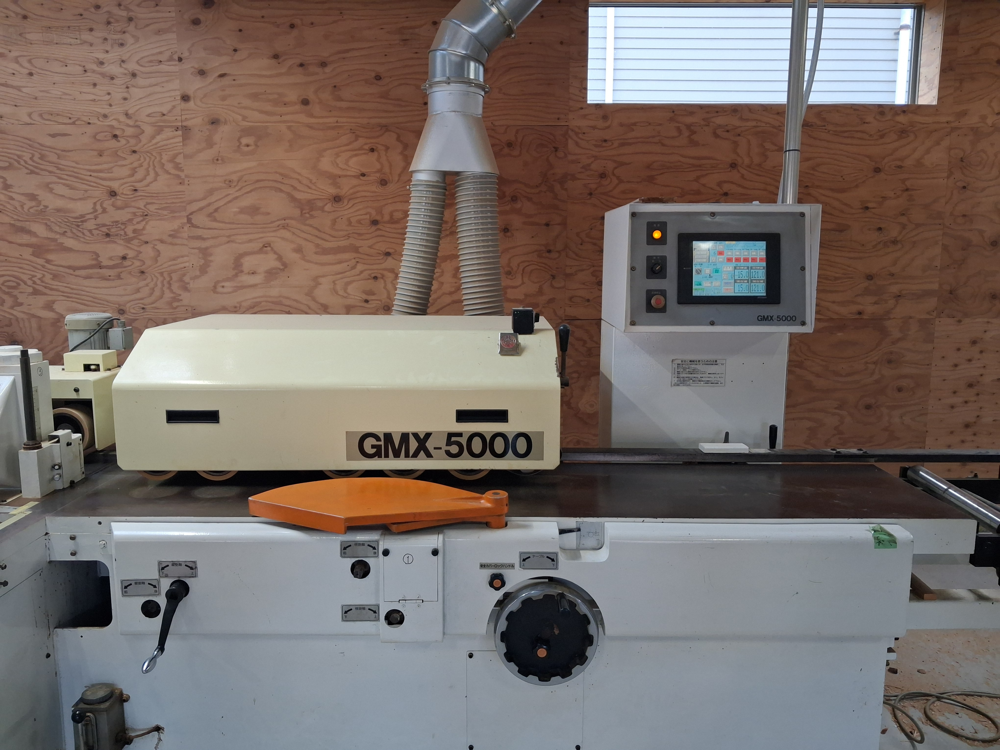
Mesin4面プレ－ナ－
Tampak depan 4面プレ－ナ－
Sistem 4 Pisau (Heads)
Menggunakan poros pisau Atas, Bawah, Kiri, dan Kanan secara berurutan.
Efisiensi Tinggi
Mempercepat proses penyerutan kayu dibanding mesin serut tunggal.
Sistem Penyedot Serbuk
Menghasilkan limbah kayu yang banyak; wajib menyalakan penyedot debu (集塵機).
Cara Menyalakan Mesin
Pemeriksaan awal dan urutan menyalakan mesin.
Cek Penyedot Debu (集塵機)
Pastikan sistem ekstraksi debu sudah HIDUP dan katup penyedot terbuka sebelum menyalakan pisau pemotong.
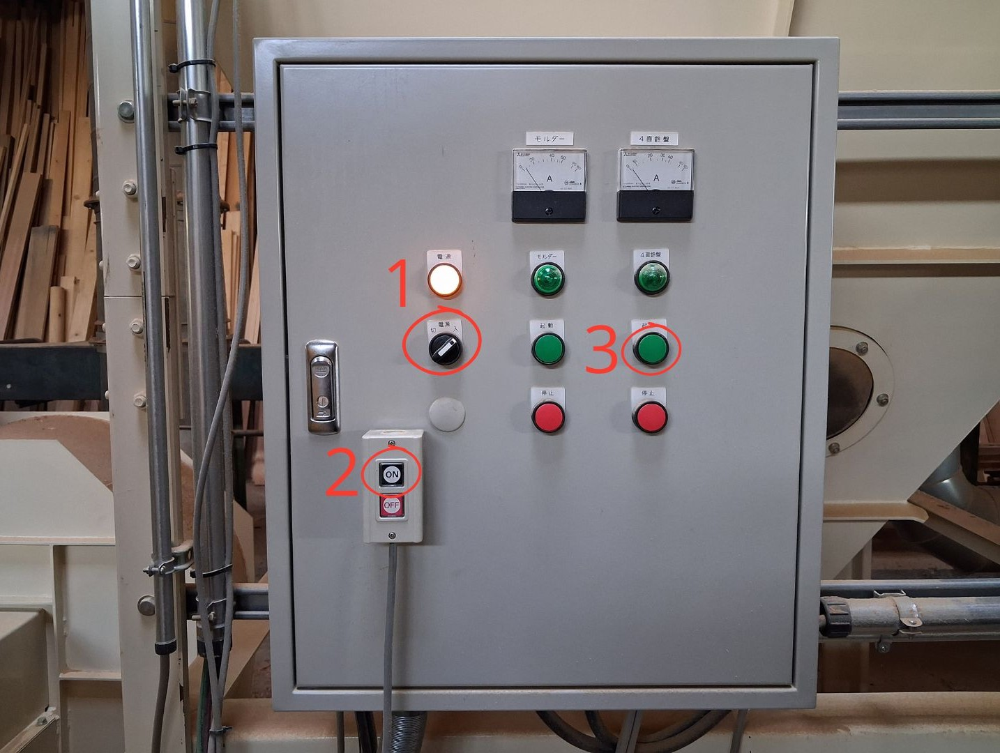
Panel Kontrol 集塵機
Tekan tombol sesuai urutan untuk menyalakan penyedot debu.
Menyalakan Semua breaker yang diperlukan
Menyalakan semua pemutus arus listrik (breaker) yang diperlukan untuk menghidupkan mesin dan sistem pendukung.
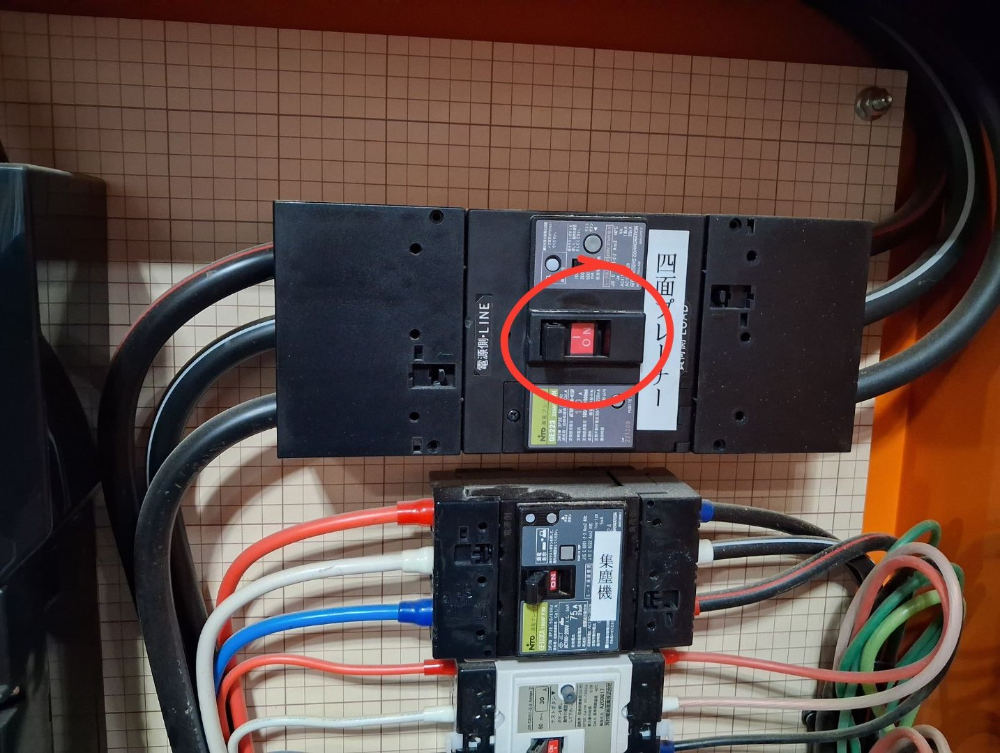
Langkah 1Panel Breaker 1
Pastikan semua breaker yang dibutuhkan dalam posisi [ON].
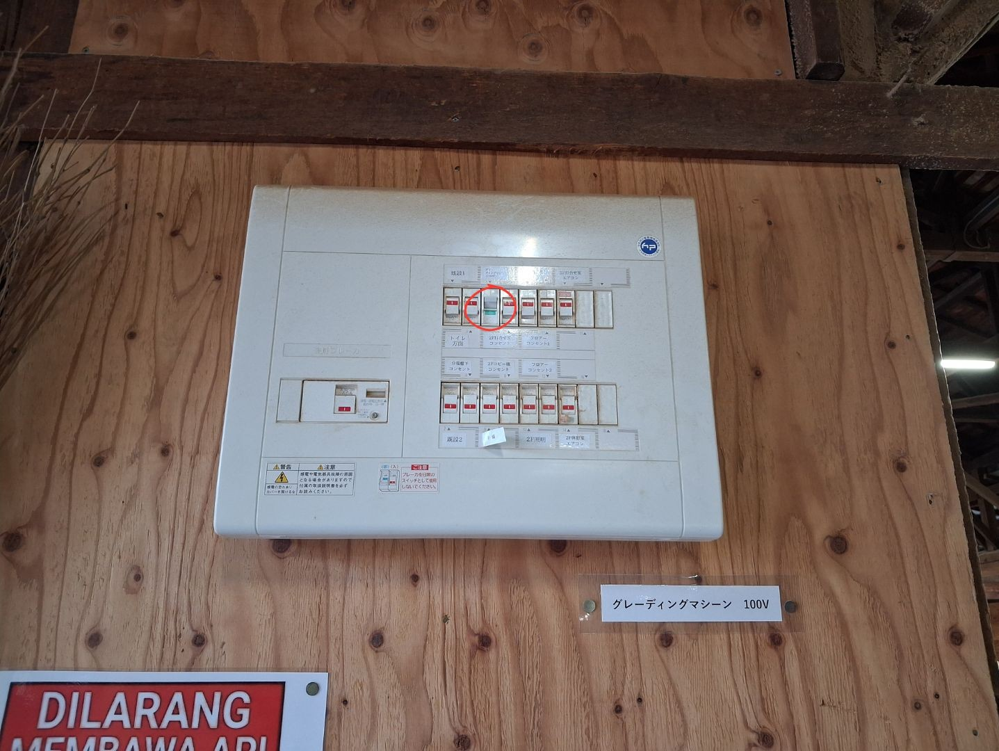
Langkah 2Panel Breaker 2
Pastikan semua breaker yang dibutuhkan dalam posisi [ON].
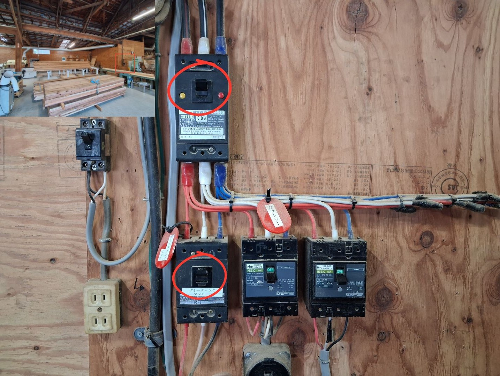
Langkah 3Panel Breaker 3 & 4
Pastikan semua breaker yang dibutuhkan dalam posisi [ON].
Sakelar Utama & Daya Sistem
Nyalakan pemutus arus utama di panel listrik. Switch Power ON pada panel kontrol.
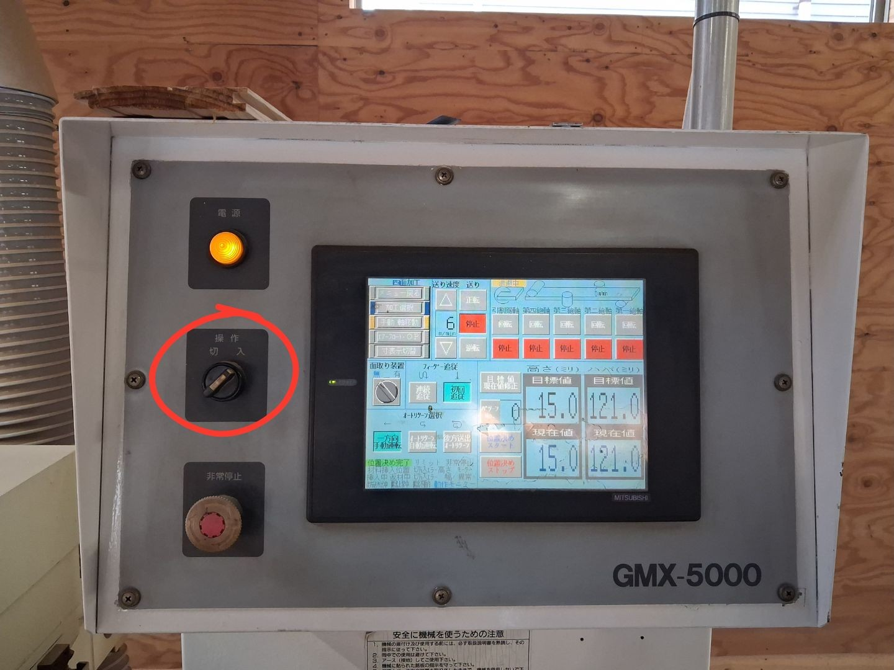
Monitor Utama Panel Kontrol
Posisikan switch ke [入] untuk menyalakan mesin.
Pengaturan Angka & Ukuran
Pengaturan layar digital dan skala mekanis untuk presisi ukuran.
Kontrol Ukuran Utama
Ketebalan Jadi (厚み)
Tentukan nilai ketebalan jadi yang diinginkan. Pastikan ketebalan kayu mentah minimal 6mm lebih besar dari ketebalan jadi.
Lebar Jadi (巾)
Tentukan nilai lebar jadi yang diinginkan. Pastikan lebar kayu mentah minimal 6mm lebih besar dari lebar jadi.
Kecepatan Dorong (送リ速度)
Sesuaikan kecepatan roda pemutar sesuai dengan kekerasan jenis kayu (misal 15-30 m/menit). Tetapi untuk hasil yang lebih rapih dan halus terutama untuk shiagari biasanya menggunakan 6m/menit agar pisau dapat memotong dengan baik.
Urutan Penyetelan dalam Monitor
Cara menyetel pengaturan mesin secara bertahap.
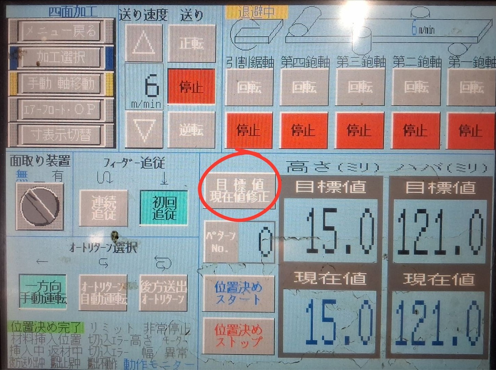
Langkah 1Tekan tombol 目標値 現在値修正
Untuk masuk ke mode pengaturan ukuran
Tekan tombol 目標値 設定
Untuk masuk ke mode untuk mengubah angka
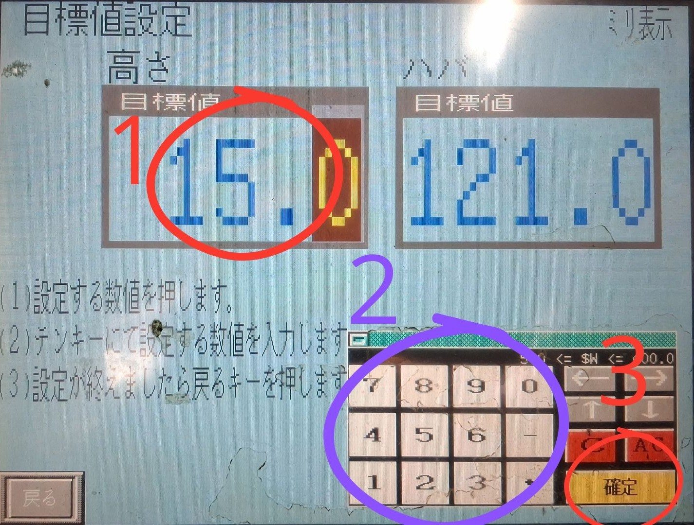
Langkah 3Menyetel 高さ atau 厚み, Ketebalan
Tekan bagian pada nomor 1 kemudian input nilai yang diinginkan pada bagian nomor 2, konfirmasi angka yang diinput dengan menekan nomor 3.
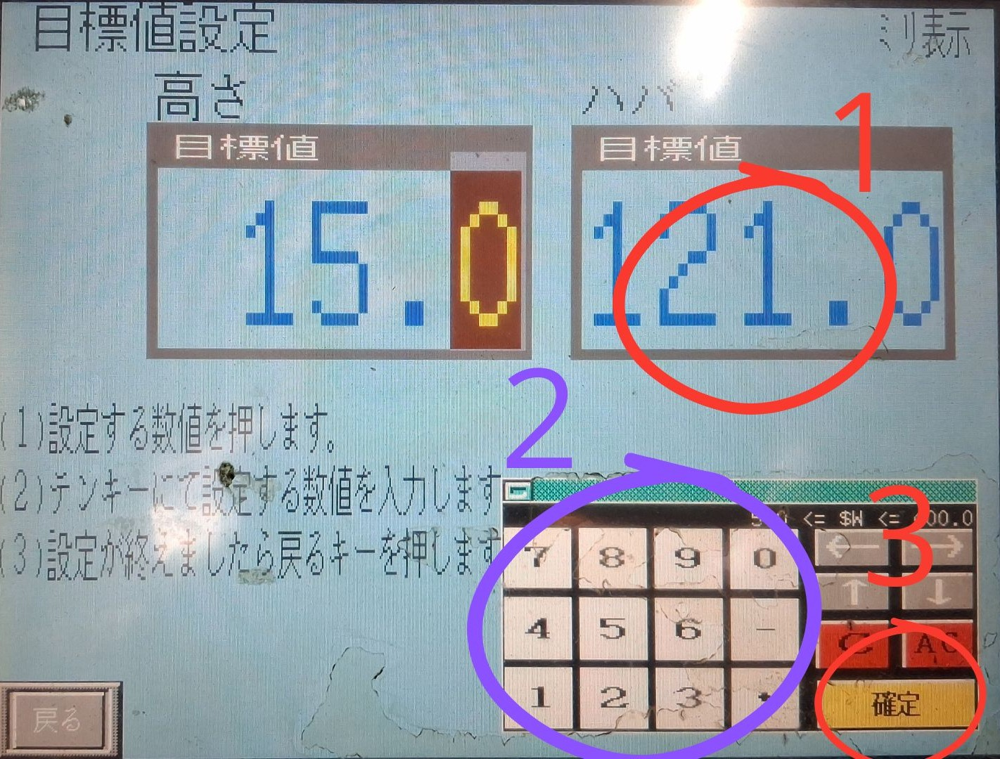
Langkah 4Menyetel ハバ atau 幅, Lebar
Tekan bagian pada nomor 1 kemudian input nilai yang diinginkan pada bagian nomor 2, konfirmasi angka yang diinput dengan menekan nomor 3.
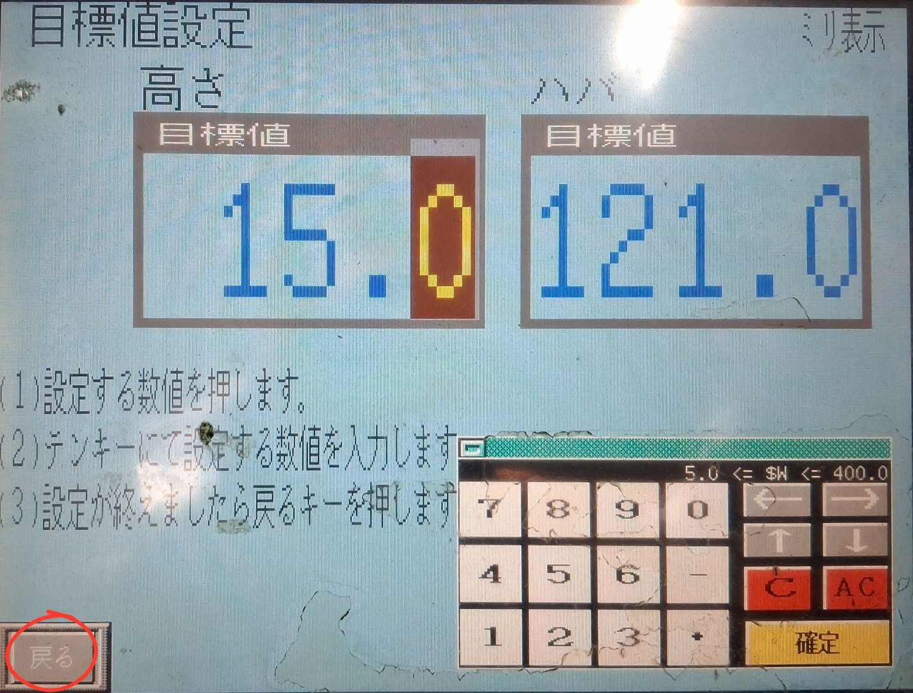
Langkah 5Pemeriksaan Kalibrasi
Pastikan pengaturan ukuran sudah benar dan konsisten dengan kebutuhan. Kemudian tekan 戻る untuk kembali ke menu sebelumnya.
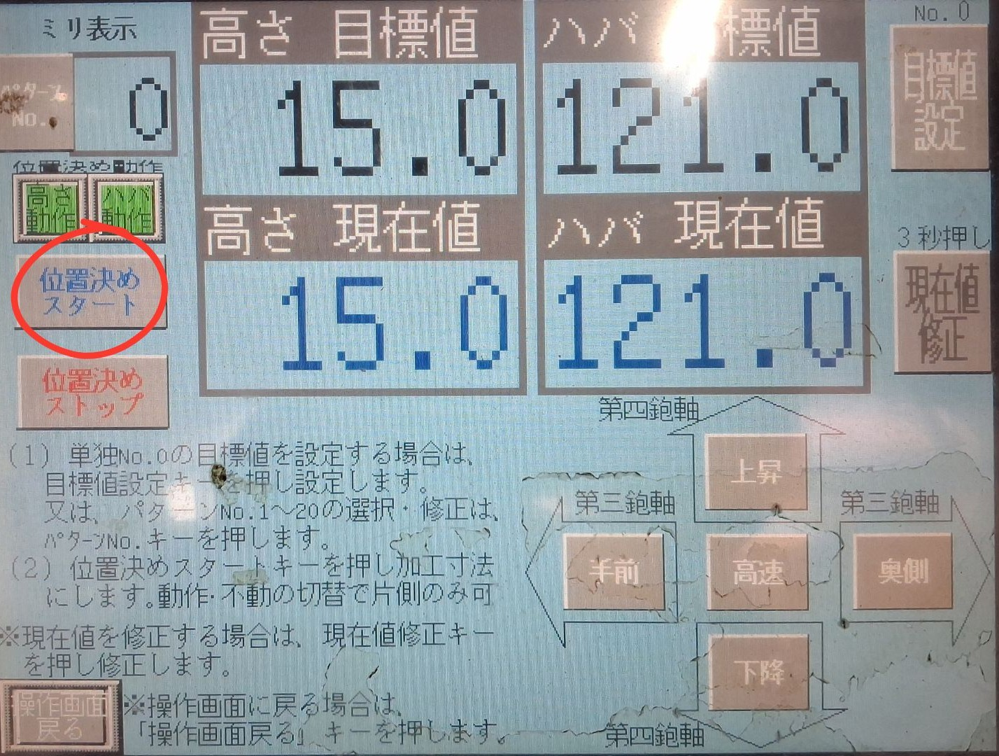
Langkah 6Tekan tombol 位置決め スタート
Untuk membuat mesin bergerak menyesuaikan setelan yang telah ditentukan.
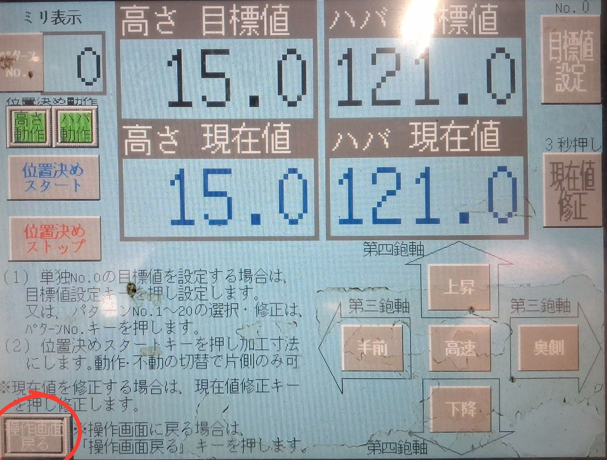
Langkah 7Tekan tombol 操作画面 戻る
Untuk kembali ke menu sebelumnya
Urutan Penyetelan Analog
Setelah menyetel angka di monitor, pastikan juga menyetel skala mekanis pada mesin agar sesuai dengan pengaturan digital. Karena Pisau 1 dan Pisau 2 hanya bisa disetel secara manual.
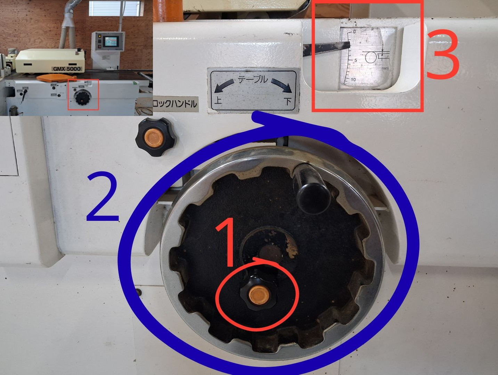
Langkah 1Sesuaikan Ukuran untuk Pisau 1
Untuk menyetel dan menghitung ketebalan kayu yang akan diserut, cari Ukuran Kayu Mentah, apabila ketebalan yang mentah adalah 35 mm dan ketebalan jadi yang diinginkan adalah 25 mm, maka pengaturan harus dilakukan dengan memperhitungkan selisih tersebut 35 - 25 = 10 mm kemudian membaginya menjadi 2, setelah itu menyetel posisi pisau bawah atau pisau 1 dengan angka hasil pembagian tersebut. untuk menyetel, longgarkan kunci pada nomor 1 kemudian putar roda nomor 2 sesuai ukuran yang dibutuhkan sembari melihat nomor 3.
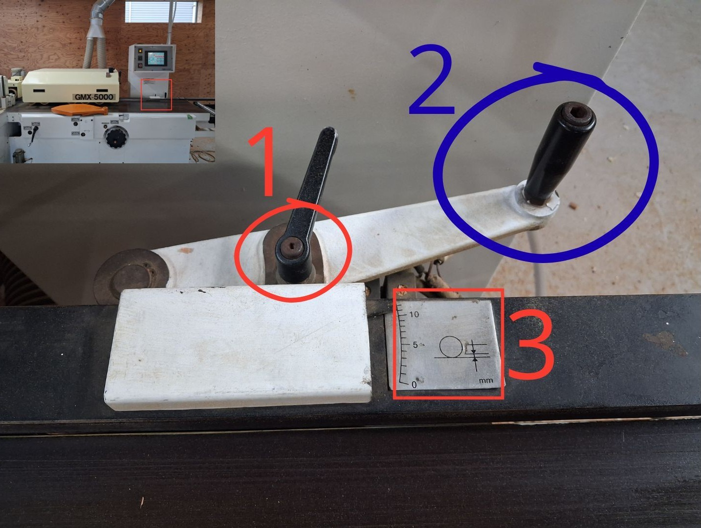
Langkah 2Sesuaikan Ukuran untuk Pisau 2
Untuk menghitung lebar kayu yang akan diserut, cari Ukuran Kayu Mentah, apabila lebar yang mentah adalah 135 mm dan lebar jadi yang diinginkan adalah 125 mm, maka pengaturan harus dilakukan dengan memperhitungkan selisih tersebut 135 - 125 = 10 mm kemudian membaginya menjadi 6 dan 4, setelah itu menyetel posisi pisau kanan atau pisau 2 menjadi 6. untuk menyetel, longgarkan kunci pada nomor 1 kemudian putar lever nomor 2 sesuai ukuran yang dibutuhkan sembari melihat nomor 3.
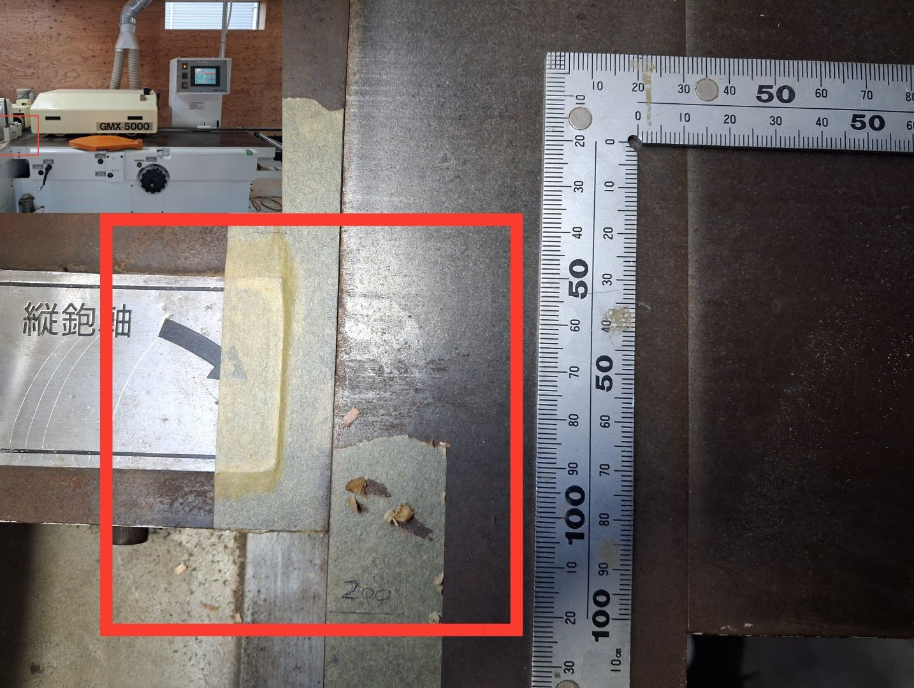
Langkah 3Memastikan Pisau 3 Apakah Sudah Benar
Untuk memastikan pisau 3 sudah benar, periksa posisinya dengan melihat jarak antara 2 garis sesuai yang ada digambar, kemudian ukur menggunakan penggaris, hasil dari pengukuran 2 garis tersebut akan menjadi X, kemudian hitung 200 - X untuk mendapatkan hasil apakah pisau 3 sudah benar.
Cara Menggunakan Mesin
Prosedur memasukkan kayu dan pengecekan kualitas.
Pemeriksaan Kayu Mentah
Periksa kayu dari paku, batu, kelengkungan ekstrem, atau kelembaban berlebih sebelum dimasukkan.
Memasukkan Kayu (Infeed)
Rapatkan kayu pada pembatas samping (fence) lalu dorong hingga roda penarik menjepit kayu.
Cek Sampel Pertama
Ukur hasil kayu pertama menggunakan jangka sorong (caliper) di ujung dan tengah untuk memastikan akurasi.
Peringatan & Bahaya
Panduan keselamatan kerja dan bahaya utama mesin planer sawmill.
Bahaya Kayu Terpental (Kickback)
Jangan pernah berdiri sejajar tepat di belakang area masuk kayu. Kayu cacat atau mata kayu bisa terlempar ke belakang dengan tenaga yang sangat kuat.
Pisau Berputar & Titik Jepit
Dilarang membuka penutup pelindung atau memasukkan tangan saat pisau masih berputar. Tunggu mesin benar-benar berhenti total sebelum membersihkan kayu yang tersangkut.
Alat Pelindung Diri (APD)
Wajib: Pelindung telinga, kacamata safety, dan sepatu safety. DILARANG menggunakan sarung tangan longgar atau pakaian longgar dekat roda pemutar.
Buat Catatan Baru
Tambahkan catatan operasional atau instruksi untuk tim.
Arsip Catatan
Daftar semua catatan operasional yang dapat diakses oleh tim.
Memuat catatan...